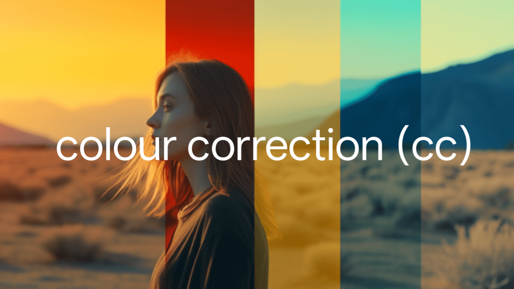
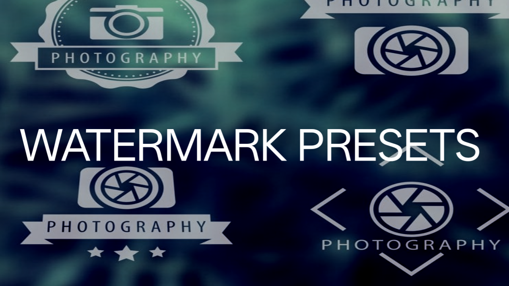

PRESET COLLECTION
 Colour Correction Presets  Watermark Presets Outro Presets
Outro Presets
 Logo Animation Presets
Logo Animation Presets
Different types of Alight Motion presets
Outro Presets
Logo Animation Presets